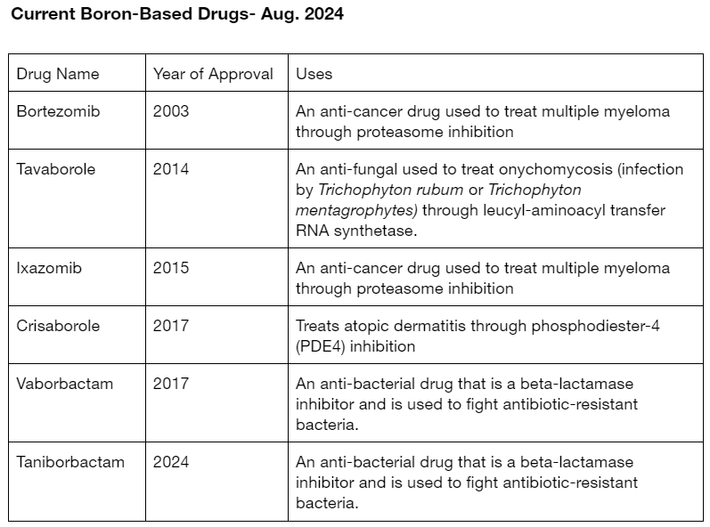

Why is Boron?
Boron has been an element that is severely underutilized and under-researched, likely due to its previous negative perception. Its association with ant poison leads to it being commonly believed that there are harmful side effects in humans. However, this was disproven when the LD50 of the active ingredient, boric acid, was found to be 2660 mg/kg when administered orally in rats. When compared to the LD50 of table salt (3000 mg/kg), this suggests that it’s not as toxic as previously thought. Another drug, Bortezomib, is a drug that is used to treat cancer. It has some serious side effects and with the pre-connotation, it was believed that these side effects were caused by the boron present. However, the mechanism of the drug is proteasome inhibition. The proteasome is an important cell organelle that facilitates the degradation of tagged proteins and is important in the regulation of proteins. 2 Since this organelle is important in all cells, the drug’s effects are not limited to just cancer cells and would cause side effects in the remaining healthy cells.
Boron was also under-researched due to the difficulty of creating many different boron-based compounds. This barrier was recently broken down due to the development of the Suzuki-Miyaura coupling reactions and other organoboron chemistry. This finally allows chemists to synthesize the large boron compound library needed for drug screening and thus allows for increasing research and interest.
Since the first boron-based drug, Bortezomib was approved in 2003, a small handful of other drugs have entered the market. This includes Tavaborole in 2014, Ixazomib in 2015, Crisaborole in 2017, Vaborbactam also in 2017, Taniborbactam in 2024, and more in current development. This small collection of boron-based drugs already shows a wide range of different uses, from anti-bacterial to cancer drugs. With further research, many other useful unexplored boron-based compounds can be discovered and added to the expanding boron-based- compounds.
